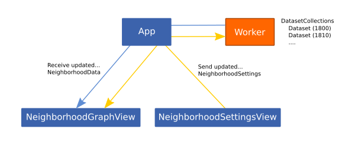

This project is written in JS and HTML and can simply be self-hosted via static files, no dynamic backend required.
This project uses npm and webpack to organize dependencies while development and bundle all application sources for final deployment.
For the visualization d3js is used and Vue.js is used as a javascript frontend framework to connect the data, dynamic configuration and reactive visualization.
The pre-processing of the data was done via a Jupyter Notebook and uses the “All English” HistWords embeddings dataset created by Hamilton et al. The files can be found hosted by the paper authors: https://pages.cs.wisc.edu/~heimerl/hamilton_embeddings.tar.bz2 (this link got recently removed!)
Datasets need to be placed into PreProcessing/data/embeddings/.
The following files contain the implementation core of this project.
Project/src/ui/NeighborhoodSettingsView.vue - UI for dynamic view and dataset settings.
Project/src/data/dataset.js - Processing of the raw embedding matrices to find nearest neighbors of a term / vector, storing the results in NeighborhoodData.
The original dataset has a combined size of 1.7GB of data for the corpus from 1800 to 1990. The terms used in 1800 are only 32MB whereas the words used in 1990 are 162Mb. The data also contains any kind of word and all its variations found in the analyzed text corpus.
Our approach was to only use a sub-selection of words and try to store the embedding matrices in the most compact way, so it can be hosted and served to the user directly. This allows to avoid having a (slow) backend doing the processing on large parts of unnecessary data. However, it also means compromises must be made as we have to pre-select the availble terms.
For a selection of words we used the New General Service List containing 2800 words. For all these words we extracted the word vectors of the original dataset and stored them in a 2800x300 matrices of 300 32-bit float numbers. These files (together with the file containing all terms) are served as files to the web visualization. Now a dataset is only 3.2Mb in size whereas the word list is 28.4kB in size.
Another side effect is that this smaller corpus of words only contains more popular terms used in the english language. We believe for an initial exploration this is of advantage compared to using the original dataset which also considers words only used sparely in the english language with the same importance.
Please see the Jupyter notebook for the code which extracts all terms and organizes them in matrices. The DatasetCollections class in dataset.js contains the code to load all matrices and the wordlist from the server and organize it in multiple Dataset classes.
To keep the UI response the data is loaded and processed in a background thread using the Web Workers API. Communication is done via messages. Settings (including term selection) is sent to the worker, the worker holds all datasets and only sends the processed data as an instance of the NeighborhoodData class back to the UI to visualize it.

The NeighborhoodSettingsView component is used to configure the NeighborhoodSettings instance which holds the dataset and terms selection as well as multiple view settings (e.g. neighbors, color scale or quantiles). Whenever the settings are changed the d3js visualization found in NeighborhoodGraphView is re-rendered. In case change of settings require the re-calculation of the NeighborhoodData a rebuild on the DataProcessor is triggered which in turn triggers a re-render.
Apart from the NeighborhoodSettingsView view also the d3js visualization in NeighborhoodGraphView can be used to influence the settings. For example clicking on a term selects the term. Or using the mouse-wheel will influence the zooming (and deactivate the auto zoom setting).
All this is done using the Vue.js data binding mechanism. The vue components only render the data and settings instances, but they are created and managed at a single point (App component) and events can freely flow between all sub-components.
In addition, the visualization also uses d3js build-in dynamic data bindings which avoids the recreation of the whole graph when the NeighborhoodData changes (this was one large disadvantage of the paper reference implementation which required a complete re-creation, resulting in loosing all interactive changes).
All this allows us to build a very dynamic visualization which can be influenced from multiple sub-components. It would also be easy to add additional variation of the visualization but use the same data structures.
Please make sure npm is installed on the machine. Linux is recommended.
npm install
npm run dev
Go to http://localhost:8080
npm run build